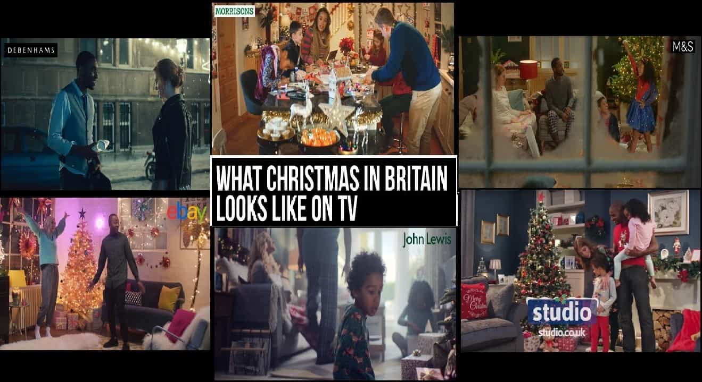
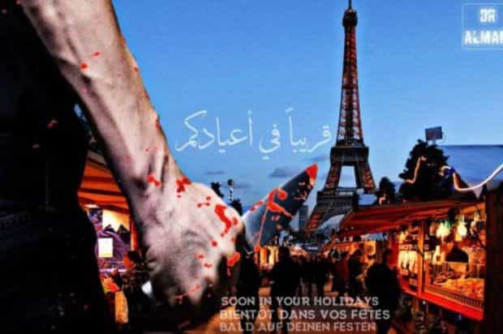
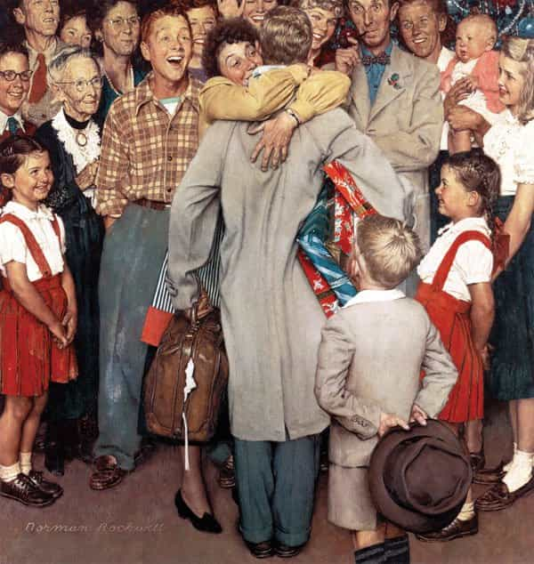

Gather round folks, sing, eat well, and be merry. In those uncertain times, the bond you share with your circle during Christmas matters more than ever. The roots keep the tree upright when the storm comes.
But our foes hate Christmas with a passion, for it is an explicit form of Western tradition and unity, one of the last bastions of our preserved European culture.
Feminists
Christmas embodies everything they hate: parental love, a tight-knit family and a festival where everyone has a role. Dad carries the presents, Mum prepares the feast and the children help put up the decorations.
Seeing them squealing with glee around the Yule tree while their mother spends hours in the kitchen, hurts feminists on a deep level. A reminder that they wasted their fertile years staying barren, widowed of the charming cads that lied with them one day then were out the door the next.
The dreaded biological clock ticks louder and its pesky sound bounces off the walls of their dusty womb. No amount of liberal platitudes can silence it.
Multiculturalists

A united family worries the population control decision makers. Fertile, learned and independent Westerners, impervious to political strife and divisive propaganda (corny parents against trendy children, toxic man against strong woman) are their worst nightmare.
Even if atheistic policies try to drown the religious spirit, the Western altruistic and generous nature of Christmas seduces almost everyone that does not hate us profoundly.
But thanks to multiculturalism, jihadis can target Christmas markets locally and hurt morale, even if Islamic concrete barriers of peace pop up everywhere.

Atheists
I will not open the “Jesus is a skinny Jew on a cross” or “2017 and defending Christianity, LMAO!” debate. Christmas or Yule, it is the symbol of warmth and kinship which keeps hope and the fire alive before entering the long winter night.
“It’s a mercantile celebration,” some will cry. But so is our human society, for the law of supply and demand exists since man started rubbing two sticks together.
Of presents
I am not hostile to the whole “gifts” process. The Havamal, my bedside book, tells us:
A true friend whom you trust well
and wish for his good will:
go to him often, exchange gifts
and keep him company.
But one must keep a cool head:
Load no man with lavish gifts.
Small presents often win great praise.
With a loaf cut and a cup shared
I found fellowship.
Reasonable presents should be there. Life keeps getting busier and it is a well-thought idea that a date is set for everyone to exchange gifts, when one might postpone or forget it during the rest of the year.
Do your part

Christmas terminology and Nativity scenes are avoided now, to be “progressive” and avoid offending the “newcomers”. Refuse this “Happy Holidays” masquerade. Reforming the language is one of the first thing leftists do when they gain power (before confiscating guns, gagging the media and “reeducateing” dissidents by force). Say “Merry Christmas”, knowing that your interlocutor might hate it.
Un très joyeux Noël
It is no coincidence that an unhappy childhood is often associated with tragic Christmas memories, caused by family or misfortune. Those moments cement a stable family life. By being joyful, sharing the kindness of Christmas with your loved ones, you are doing something for all of us.
If you had any doubts that you were on the right side, know that our adversaries want to take these moments and these people you love away from you.
Joyeux Noël to each and every one of you, dear readers.
Read More: A ROK Christmas Benediction From Brother Cui Pertinebit